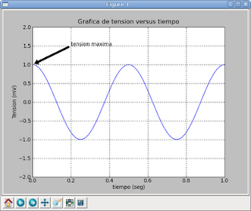

Tutoriales de matplotlib con python. Parte 4
Posted on Tue 16 June 2009 in Tutorial Python • 1 min read
El siguiente ejemplo se graficará una curva senosoidal definiendo un rango de tiempo.
>>> import numpy
>>> import pylab
>>> t = numpy.arange(0.0, 1.0+0.01, 0.01)
>>> s = numpy.cos(2*2*numpy.pi*t)
>>> pylab.plot(t, s)
[]
>>> pylab.xlabel('tiempo (seg)')
>>> pylab.ylabel('Tension (mV)')
>>> pylab.title('Grafica de tension versus tiempo')
>>> pylab.axis([0,1, -2,2])
>>> pylab.grid(True)
>>> pylab.annotate('tension maxima', xy=(0, 1), xytext=(0.2, 1.5),arrowprops=dict(facecolor='black', shrink=0.05),)
>>> pylab.savefig('grafica.png')
>>> pylab.show()
Se importa el módulo numpy y pylab, luego se define el rango del eje del tiempo con una función de numpy, luego se define el eje de la tensión con la función coseno, se gráfica tanto el tiempo como la tensión, se coloca etiqueta a ambos ejes, título a la gráfica, se define los ejes de la gráfica,se define cuadricula, se define una anotación, colocando el texto de la anotación, luego la posición de a flacha, la posición del texto y las características de la flecha; se guarda la gráfica y se muestra.

===
¡Haz tu donativo! Si te gustó el artículo puedes realizar un donativo con Bitcoin (BTC) usando la billetera digital de tu preferencia a la siguiente dirección: 17MtNybhdkA9GV3UNS6BTwPcuhjXoPrSzV
O Escaneando el código QR desde billetera: